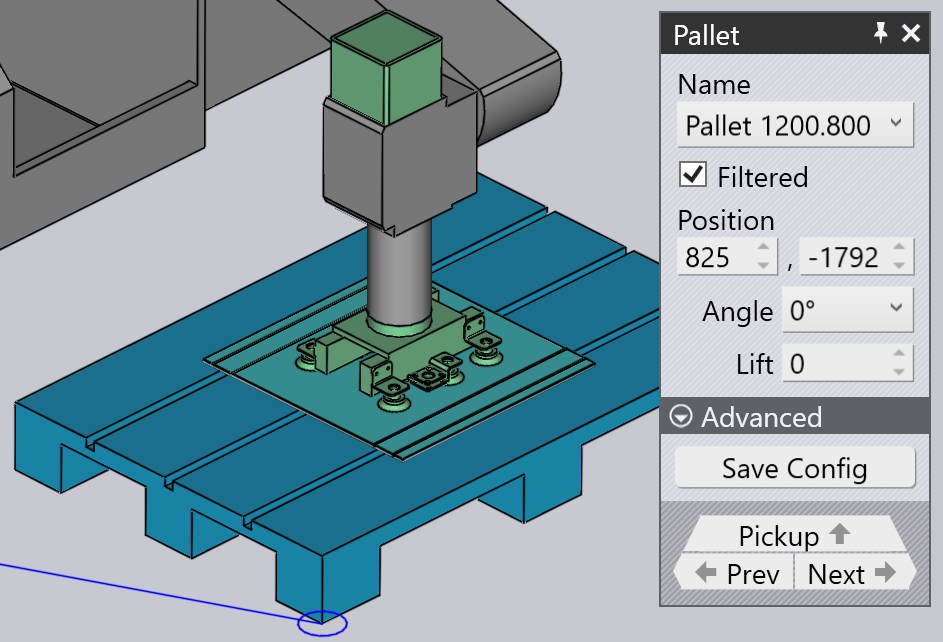
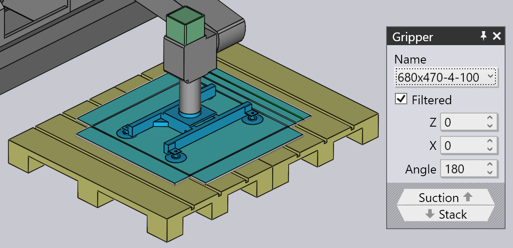
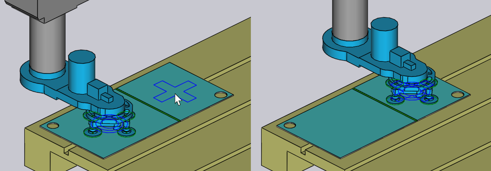
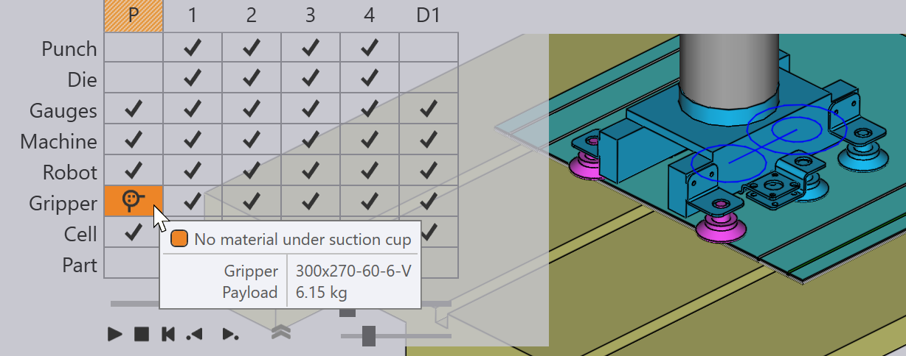
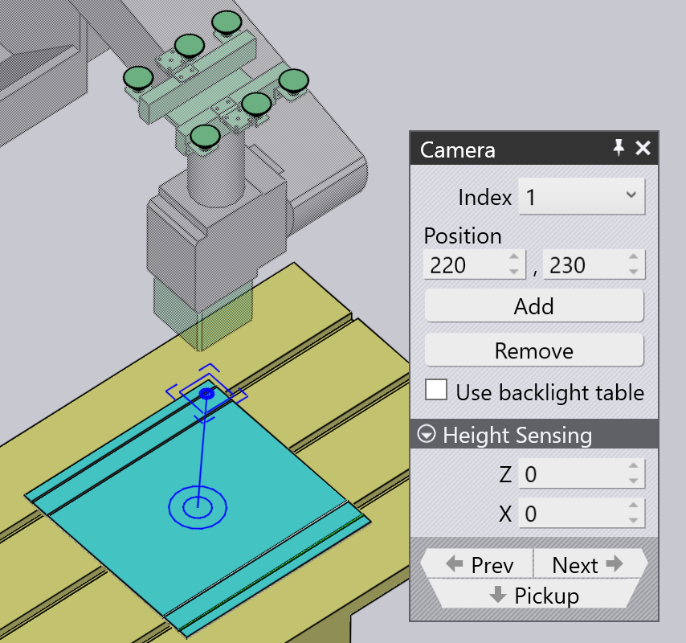
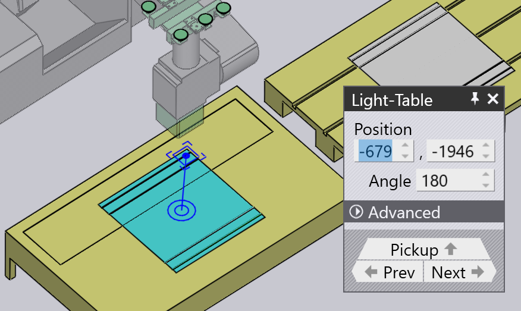

Vyzvednutí z palety
Při použití vakuového sání nebo magnetického upínače jsou surové materiály (ploché díly) vyzvedávány z palety. Tyto parametry ovlivňují tento proces:
-
Poloha palety v buňce stroje.
-
Poloha a orientace stohu dílů na paletě.
-
Poloha a orientace sacího upínače na dílu.
-
Konfigurace přísavek upínače (které přísavky jsou zapnuté/vypnuté a jaký typ přísavek je namontován v každé zdířce).
-
Oblasti dílu, které jsou snímány kamerou na robotu a používány jako reference pro kalibraci polohy dílu.
Panely používané k úpravě všech těchto nastavení jsou zobrazeny níže – všechny jsou propojeny navigačními odkazy nahoru/dolů, které vedou k dalším panelům v logickém pořadí:

Jak ukazuje obrázek výše, k těmto panelům lze také snadno přistupovat pouhým kliknutím na různé objekty v simulaci:
-
Chcete-li otevřít panel Paleta, klikněte na paletu.
-
Chcete-li upravit stoh dílů na paletě (panel Vyzvednutí), klikněte na surové materiály ležící na paletě.
-
Chcete-li upravit polohu upínače na surovém materiálu (panel Upínač), klikněte na upínač.
-
Chcete-li upravit konfiguraci přísavek chapadla (panel Sání), klikněte na jednu z přísavek.
-
Chcete-li upravit polohy snímání (používané systémem jemného rozpoznávání polohy), klikněte na kameru.
Panel Paleta
Panel Paleta slouží k výběru palety a jejímu umístění do buňky. Tento panel můžete otevřít pouhým kliknutím na paletu; TecZone Bend také nastaví časovou osu simulace tak, aby robot zaujal polohu v okamžiku vyzvednutí dílu z palety.

-
Pomocí výběru Name vyberte jinou paletu. Normálně jsou uvedeny pouze palety, které lze použít pro tento surový materiál, ale můžete kontrolu Filtered vypnout a zobrazí se všechny dostupné palety.
-
Při najetí myší na název v seznamu názvů se zobrazí stručný přehled dané palety spolu s miniaturou:

-
Pomocí vstupů Position umístěte paletu do polohy Z a X (v souřadnicích buňky) a pomocí vstupu Angle otočte paletu. Při pohybu nebo otáčení palety se stoh dílů na paletě a upínač/robot pohybují společně s ní.
-
Pomocí tlačítek Next a Prev přejděte k dalším paletám v buňce, například k paletě s operacemi ukládání dílů.
-
Pomocí navigačního tlačítka Pickup upravte polohu stohu dílů na paletě.
-
Pomocí tlačítka Save Config pod sekcí Advanced uložte tuto konfiguraci buňky (včetně všech palet) jako výchozí pro tento stroj.
Panel Vyzvednutí
Panel Vyzvednutí slouží k úpravě polohy stohu dílů na paletě. Tento panel můžete otevřít přímo kliknutím na stoh surových materiálů ležících na paletě. (Můžete k němu také přistupovat pomocí odkazu Pickup v panelu Paleta).

-
Pomocí vstupů Position umístěte stoh na paletu; tyto souřadnice určují střed dílu v Z a X vzhledem k rohu palety a jsou v lokálním souřadnicovém prostoru palety.
-
Pomocí vstupu Angle otočte díl v paletě.
-
Pomocí spínače Flip part zrcadlete díl. Pamatujte, že to obvykle znamená, že před zpracováním prvního ohybu bude nutné provést dodatečné přeuchopení (to bude přidáno automaticky TecZone Bend).
-
Pomocí odkazu Camera přepněte na panel Kamera, kde můžete nastavit fázi rozpoznávání obrazu vyzvednutí.
-
Odkaz Waypoints otevře editor Body trasy, kde můžete jemně seřídit dráhu robota během vyzvedávání.
-
Odkaz RG-Stations otevře panel Přehmatávací stanice, kde můžete nakonfigurovat polohu přehmatávací stanice během operace vyzvednutí.
Při objetí dílu na paletě zůstává upínač vězet na dílu a robot sleduje pohyby.
Panel upínače
Panel Upínač slouží k výběru jiného upínače nebo ke změně polohy a orientace, ve které upínač uchopí díl.

-
Pomocí výběru Name vyberte jiný upínač. Normálně se zobrazují pouze upínače vhodné pro tento díl (na základě velikosti upínače a užitečného zatížení), ale můžete kontrolu Filtered vypnout a zobrazit tak všechny upínače.
-
Při najetí myší na název v seznamu upínačů se zobrazí stručný přehled daného upínače spolu s miniaturou:

-
Pomocí vstupů Position posuňte střed upínače vzhledem ke středu dílu a pomocí vstupu Angle otočte upínač vzhledem k orientaci dílu.
-
Pomocí odkazu Suction přepněte do režimu jemného nastavení upínače (výběr různých přísavek, zapnutí/vypnutí přísavek).
-
Tlačítko Set Grip Plane lze použít k umístění upínače do jiné roviny. Obvykle se k umístění upínače používá největší rovina v modelu. Pokud to chcete změnit, klikněte na toto tlačítko. Poté klikněte na rovinu, kde má být umístěn upínač:

-
Tlačítko Use Jaw Gripper slouží k přepnutí tohoto dílu na použití dávkovače dílů a čelisťového upínače (mechanického upínače). Všechny fáze cyklu ohýbání od vyzvednutí po uložení se přepočítávají s použitím čelisťového chapače[1].
Varování týkající se sání
Pokud se upínač posune tak, že některé přísavky leží mimo plech nebo jsou umístěny nad otvory v dílu, přísavky se zvýrazní a zobrazí se chyba v sloupci Vyzvednutí navigátoru, jak je znázorněno na obrázku níže:

Menu akcí

Tlačítko Akce slouží k vyvolání menu, které poskytuje některé užitečné akce na upínači:
-
Auto-place: Shift Pokouší se o přemístění upínače nad díl, aby všechny přísavky ležely uvnitř dílu a ne nad otvory (pokud je to možné).
-
Turn off leaking cups: Vypne všechny přísavky, které leží nad otvory nebo jsou mimo hranice dílu[2].
-
Turn on all cups: Zapne všechny vypnuté přísavky.
-
Save Config: Pokud nakonfigurujete upínač vypnutím nebo odstraněním některých přísavek nebo změnou délky nebo úhlu ramen (u multinásobných upínačů, které mohou měnit tvar), můžete uložit změněnou konfiguraci upínače pod novým názvem, aby bylo možné ji snadno znovu použít.
-
Export Gripper: Uložte aktuální upínač jako soubor .fxbgrip, který lze importovat do jiné instalace TecZone Bend. To je užitečné, pokud jste importovali vlastní upínač a potřebujete jej sdílet s jinými instalacemi.
Panel Sání
Panel Sání se používá ke konfiguraci rozložení přísavek upínače. Tento panel můžete otevřít kliknutím přímo na přísavku nebo výběrem odkazu Sání z panelu upínače.

-
Pomocí volby Cup # vyberte konkrétní přísavku v upínači nebo pomocí tlačítek Next a Prev procházejte přísavky. Vybraná přísavka je zvýrazněna modře a lze ji upravit.
-
Pro každou přísavku můžete nastavit State na Zapnuto, Vypnuto nebo Vyjmuto. Více informací naleznete v popisu níže.
-
Pomocí panelu Type můžete změnit typ přísavky. Obvykle se všechny přísavky v upínači vymění za nový typ, ale můžete také kombinovat různé přísavky tak, že vypnete tlačítko Change All a poté vyměníte přísavky. (Vezměte na vědomí, že při tomto postupu bude výběr přísavek omezen, protože všechny přísavky namontované na rámu upínače musí mít stejnou pracovní výšku). Na obrázku výše jsou dvě přísavky nahrazeny menšími (SAXM50 namísto výchozích SAXM80).
-
Pomocí tlačítka Reset můžete vrátit upínač do původního stavu – všechny přísavky se zapnou a resetují se zpět na výchozí typ přísavky, který je definován v upínači.
Výchozí stav přísavky je Zapnuto, což znamená, že přísavky jsou připojeny k vakuovému vedení a pomáhají při zvedání.
Pokud přísavka leží nad otvorem v dílu, můžete změnit stav na Vypnuto, což znamená, že není vytvořeno vakuum. (Tím se sníží zdvih upínače a změní se těžiště zdvihu, což TecZone Bend zohledňuje při kontrole kapacity upínače). Všimněte si, že přísavka je stále namontovaná v rámu a účastní se kontrol kolizí. TecZone Bend zobrazuje vypnuté přísavky jako drátové modely, jak je vidět u dvou přísavek na obrázku výše.
Nakonec můžete nastavit přísavku na Vyjmuto, což znamená, že přísavka byla odstraněna z rámu ve skutečném stroji. Z této přísavky není možný zdvih a nedojde ke kolizi. To je někdy užitečné, pokud přísavka spadne na tvarovanou oblast nebo způsobí kolizi s matricí nebo stolem stroje během provozu.
Panel Kamera
Proces vyzvednutí vyžaduje, aby kamera pořídila jeden nebo více snímků a systém zpracování obrazu pak tyto snímky použije k přesnému odhadu, kde se daný díl na paletě nachází. Kliknutím na kameru namontovanou na robotu nebo výběrem navigačního tlačítka Kamera na panelu Vyzvednutí se otevře panel Kamera. TecZone Bend také umístí simulaci tak, aby robot zaujal polohu potřebnou pro pořízení snímku:

-
Pomocí seznamu Index (nebo tlačítek Next a Prev) můžete procházet různé obrázky s jemnou identifikací, které se používají pro tento díl. Při tom TecZone Bend zobrazí oranžový obrys, který ukazuje zónu rozpoznávání obrazu na dílu (viz obrázek výše).
-
Pomocí vstupů Position přemístěte tuto zónu v Z a X tak, aby lépe zahrnovala některé zajímavé prvky, které mohou zlepšit přesnost rozpoznávání (rohy, malé otvory, výseky).
-
Pomocí tlačítka Add přidejte další rozpoznávací obrázek (až 4) a pomocí tlačítka Remove odstraňte aktuální rozpoznávací obrázek. Během simulace vyzvednutí dílu TecZone Bend ukazuje robota, jak se pohybuje do každé z těchto rozpoznávacích oblastí s kamerou dolů a zastavuje se, aby pořídil snímek.
Pokud je spínač Use backlight table zapnutý, díl se přenese na osvětlený stůl, než se použije kamera k jeho zobrazení. To zvyšuje kontrast a je užitečné pro vysoce odrazivé díly. TecZone Bend přidá tabulku podsvícení a automaticky ji umístí poblíž palety pro vyzvednutí, ale polohu můžete poté nakonfigurovat kliknutím na ni:
